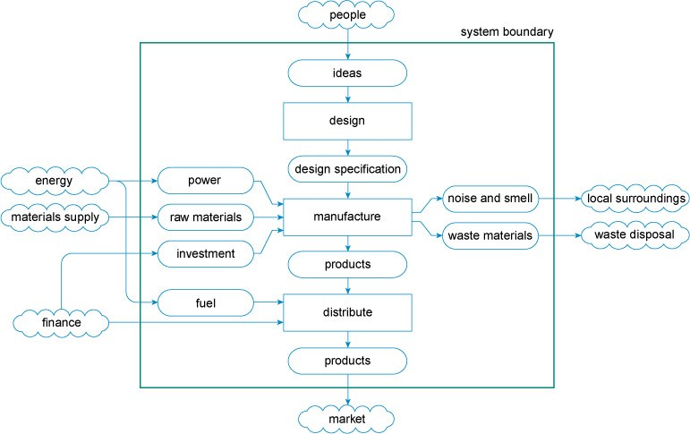

by João Fonseca 65383 Miguel Caria 82502
Manufacturing today
What is manufacturing?
Manufacturing refers to a large-scale process of converting raw materials, components, or parts into finished goods that meet a customer's expectations or specifications. The finished goods can be sold directly to consumers, to other manufacturers for the production of more complex products, or to wholesalers who distribute the goods to retailers. Manufacturing businesses often employ machines, robots, computers and humans to produce the merchandise and typically use an assembly line, which enables a product to be put together step by step, moving from one workstation to the next.
The manufacturing process
The figure below is an example of a process flow diagram that tries to describe the whole activity of manufacturing a product, from the initial idea through to delivery of the product to the customer. It is important to note that manufacturing and design are not separate activities but are intimately connected in the production system. Activities are depicted as rectangular boxes, and boxes with rounded corners as the inputs to each activity and the outputs from them.
There are three main types of manufacturing production: make-to-stock (MTS), make-to-order (MTO), and make-to-assemble (MTA):
Make-to-stock (MTS) is a traditional manufacturing strategy that relies on past sales data to forecast consumer demand and plan the production activity in advance. The drawback of this strategy is that it uses past data to predict future demand, which increases the likelihood of the forecasts being off, leaving the manufacturer with too much or not enough stock.
Make-to-order (MTO) allows customers to order products that are customized and manufactured to their specifications. The manufacturing process begins only after the order is received, so the waiting time for the customer is longer, but the risk of excessive inventory is cut out.
Make-to-assemble (MTA) is a strategy that relies on demand forecasts to stock the basic components of a product, but starts assembling them after the order is received. It’s a hybrid of MTS and MTO approaches. Customers can customize the products and receive them quicker because the manufacturer has the basic components ready, but if there are no orders, the manufacturer would have exceeding stock of unwanted parts.
In any of those types, there are risks. Producing too many goods leads to financial losses as money is kept in unwanted stock; low production may not meet the demand, which can cause the customer to turn to competition and induce a drop in sales for the manufacturer.
To reduce the risks, the business should focus on keeping production costs low, maintaining good quality control and investing in sales management.
Concepts Definition
Manufactoring - Large-scale process of converting raw materials, components, or parts into finished goods that meet a customer's expectations or specifications.
Manufacturer - A person, group, or company that that owns or runs a manufacturing process.
Process - Sequence of interdependent and linked procedures which, at every stage, consume one or more resources (employee time, energy, machines, money) to convert inputs (data, material, parts, etc.) into outputs. These outputs then serve as inputs for the next stage until a known goal or end result is reached.
Raw materials - Material in its natural, modified, or semi-processed state, used as an input to a production process for subsequent modification or transformation into a finished good.
Finished goods - Materials or products which have received the final increments of value through manufacturing or processing operations, and which are being held in inventory for delivery, sale, or use.
Big Data analytics - Analytics based on large data sets with the purpose of optimizing production quality, save energy, or improving equipment service.
Autonomous robots -Self-contained robots that have enough sensory input and decision-making capability to be able to perform tasks without human intervention.
Simulation - 3-D simulations of products, materials, production processes and operations, with the purpose of leveraging real-time data to mirror the physical world in a virtual model.
Industrial Iot -Use of Internet of Things technology in manufacturing.
Additive Manufactorings -Or 3D printing, is the process in which material is joined or solidified under computer control to create three-dimensional objects.
Augmented reality - Technology that superimposes a computer-generated image on a user's view of the real world, thus providing a composite view.
Wholesalers - Intermediary entities in the distribution channel that buys in bulk and sells to resellers rather than to consumers.